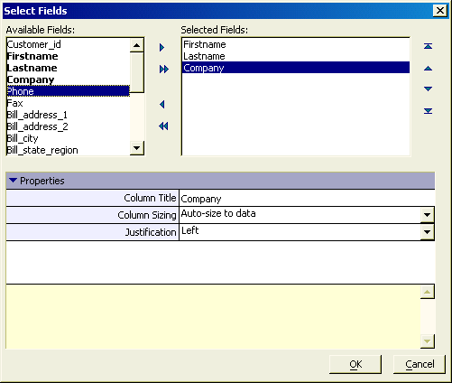

Select Fields Dialog - Generic
The <span class=Screen>List View Genie</span> and <span class=Screen>ADO Import Genie</span> use the Specify Fields dialog to create SQL SELECT statements.
Use the


 to add the
fields you want to display to the Selected Fields
list.
to add the
fields you want to display to the Selected Fields
list.Use the


 to set the
fields display order.
to set the
fields display order.Select each field in the Selected Fields list:
Enter the column title into the Properties > Column Title field.
Make a selection in the Properties > Column Sizing list. The options are:
"Do not auto-size"
"Auto-size to data"
"Auto-size to column header"
"Specify width"
If you selected "Specify width", enter the column width in inches into the Properties > Column Width field.
Make a selection in the Properties > Justification list. The options are:
"Left"
"Center"
"Right"
Click OK to continue.

See Also
List View Genie, ADO Import Genie